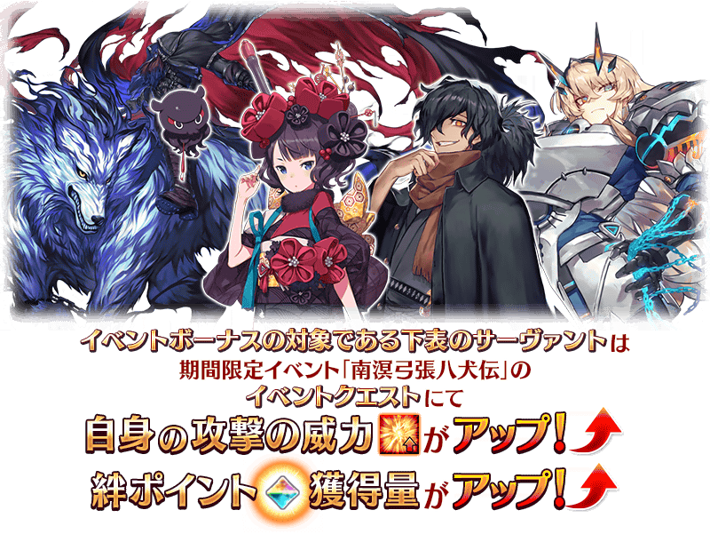

決定自2022年6月下旬舉辦期間限定活動「南溟弓張八犬傳」！
詳細敬請期待續報。
◆活動舉辦預定◆
2022年6月下旬～(預定)
◆活動參加條件◆
滿足以下條件的御主才能參加
・通過第2部 第3章「Lostbelt No.3 人智統合真國 SIN 紅之月下美人」
※不需要通過亞種特異點(從Ⅰ到Ⅳ)。
※在2018年12月31日(二) 23:00以後新配信的主線故事及期間限定活動、一部份關卡、宣傳活動及召喚中，會顯示隱藏真名的對象從者真名。
期間限定活動「南溟弓張八犬傳」的期間中，一部份的從者及Archer職階從者は在活動關卡中會得到「自身的攻擊的威力提升」與「絆點數獲得量提升」的加成！
※活動加成的效果量因從者而異。

【活動加成的對象從者】
| 職階 | 稀有度 | 從者名 |
|---|---|---|
| Saber | ★★★★ | 巴格斯特(妖精騎士高文) |
| Archer | 所有的Archer職階從者 | |
| Assassin | ★★★ | 岡田以藏 |
| Avenger | ★★★★ | 海森・羅伯(新宿的Avenger) |
| Foreigner | ★★★★★ | 葛飾北齋 |
※「★4(SR)巴格斯特(妖精騎士高文)」是「妖精騎士高文」靈基再臨到第2階段後名稱變成「巴格斯特」。 ※就算成為對象從者也會有未在本活動的主線劇本登場的情況。 ※自6月22日(三) 17:00，在從者選擇畫面和從者強化畫面等，追加活動加成篩選器。由於是只顯示於活動活躍從者的便利功能，敬請活用。